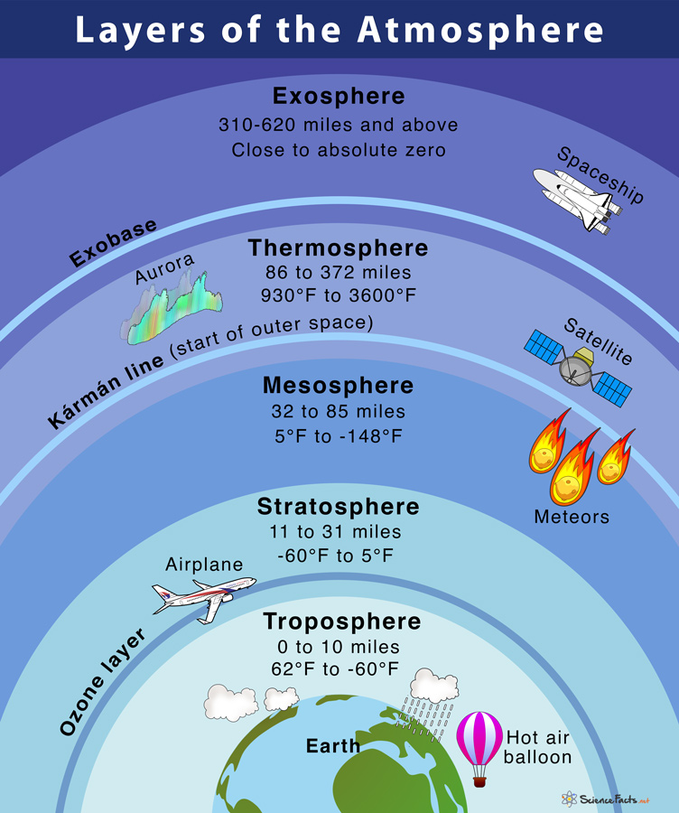

DEFINITION
CEILING
The height above the ground or water of the base of the lowest layer of cloud below 6000 m (20000 feet) covering more than half the sky.
RUNWAY VISUAL RANGE (RVR)
The range over which the pilot of an aircraft on the centre line of a runway can see the runway surface markings or the lights delineating the runway or identifying its centre line.
VISIBILITY
Visibility for aeronautical purposes is the greater of:
- the greatest distance at which a black object of suitable dimensions, situated near the ground, can be seen and recognized when observed against a bright background;
- the greatest distance at which lights in the vicinity of 1 000 candelas can be seen and identified against an unlit background.
COMPOSITION OF THE ATMOSPHERE
The atmosphere may be conveniently divided into a number of layers on the basis of certain physical characteristics, the chief of which being the character of vertical distribution of temperature. A brief account of the various layers is given below as in figure 7.
